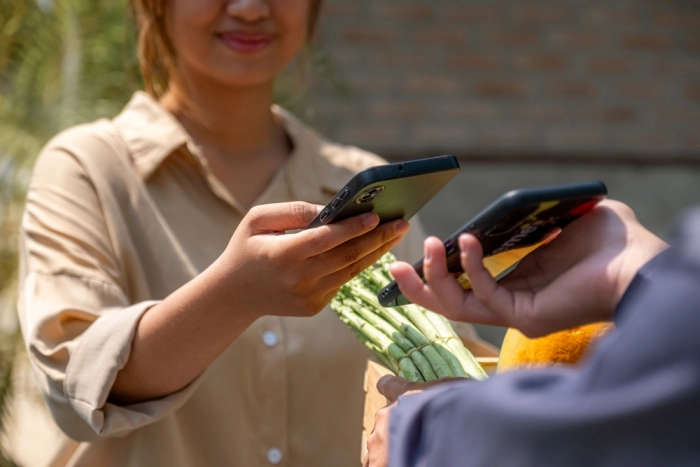

Лента материалов
17:23
В HappyDesk интегрировали ChatGPT-бот
17:20
ПО "Контур" автоматизирует разработку целей для планирования
16:00
Трансграничные QR-платежи и снижение долларовой зависимости
15:00
Система Directum RX поддерживает полный цикл работы с МЧД
15:00
Как сообщить о телефонных мошенниках?
14:30
Количество атак на "умные" устройства возросло на 50%
14:00
Лучшие вакансии сентября в ИТ в небольших российских городах
12:00
F.A.C.C.T. проверила безопасность коммуникатора ANWORK
11:00
Начато производство аутентификаторов Рутокен MFA
10:00
«Лаборатория Касперского» и Centerm подписали OEM-соглашение
В HappyDesk интегрировали ChatGPT-бот
В HappyDesk появилась новая функция — чат-бот на основе ChatGPT. Бот может общаться с клиентами вместо операторов: он на связи 24/7 без выходных и отпусков.
Чат-бот подключается к трем каналам: web-виджету, WhatsApp, Telegram. Можно подключить сразу все или выбрать только нужные.
Бота необходимо активировать в настройках, а потом обучить. Для этого нужно добавить в HappyDesk описание компании и ответы на часто задаваемые вопросы. Напишите свои или используйте готовые шаблоны.
Бот обработает данные и будет давать максимально точные ответы. Если же он не поймет запрос или клиент сам захочет пообщаться с живым человеком, диалог будет мгновенно переведен на оператора. Вся история переписки сохраняется в системе, поэтому сотрудник быстро поймет контекст общения.
Чат-бот подключается к трем каналам: web-виджету, WhatsApp, Telegram. Можно подключить сразу все или выбрать только нужные.
Бота необходимо активировать в настройках, а потом обучить. Для этого нужно добавить в HappyDesk описание компании и ответы на часто задаваемые вопросы. Напишите свои или используйте готовые шаблоны.
Бот обработает данные и будет давать максимально точные ответы. Если же он не поймет запрос или клиент сам захочет пообщаться с живым человеком, диалог будет мгновенно переведен на оператора. Вся история переписки сохраняется в системе, поэтому сотрудник быстро поймет контекст общения.
ПО "Контур" автоматизирует разработку целей для планирования
"Интерсофт Лаб" расширила возможности решения для финансового планирования на отечественной платформе "Контур". Обновление поможет финансовым службам банков минимизировать сроки и трудоемкость подготовки укрупненного прогнозного плана и повысить его обоснованность.
Приложения «Финансовое планирование» и «Прогнозирование и моделирование» входят в состав отечественной программной платформы «Контур» класса Risk-based Corporate Performance Management (сокр. RCPM-платформа «Контур») для финансовых организаций. Оба приложения функционируют на базе финансового хранилища данных «Контур».
Приложение «Финансовое планирование» предназначено для автоматизации годового планирования деятельности банков. Приложение поддерживает все этапы процесса подготовки финансового плана: формирование укрупненного прогнозного плана, его декомпозицию по подразделениям, клиентским сегментам, продуктам и другой аналитике, заполнение бизнес-планов, планов инвестиций и хозяйственных расходов, их консолидацию в единый план, его согласование и утверждение.
Приложение «Прогнозирование и моделирование» позволяет прогнозировать и моделировать состояние банковских портфелей и рассчитывать на основе этих данных различные показатели, необходимые в решении задач управления рисками и прибыльностью, финансового планирования, трансферного управления ресурсами и др.
Подготовка укрупненного прогнозного плана - отправной этап в финансовом планировании. Согласованный с акционерами укрупненный план служит целевым ориентиром для детального планирования в бизнес-подразделениях.
Теперь, в приложении «Финансовое планирование» помимо ручного ввода показателей укрупненного прогнозного плана, появилась возможность автоматически рассчитывать их с помощью приложения «Прогнозирование и моделирование». Для вычисления прогнозных значений показателей используются данные по текущим и историческим портфелям договоров, консолидированные в хранилище данных банка.
Приложения «Финансовое планирование» и «Прогнозирование и моделирование» входят в состав отечественной программной платформы «Контур» класса Risk-based Corporate Performance Management (сокр. RCPM-платформа «Контур») для финансовых организаций. Оба приложения функционируют на базе финансового хранилища данных «Контур».
Приложение «Финансовое планирование» предназначено для автоматизации годового планирования деятельности банков. Приложение поддерживает все этапы процесса подготовки финансового плана: формирование укрупненного прогнозного плана, его декомпозицию по подразделениям, клиентским сегментам, продуктам и другой аналитике, заполнение бизнес-планов, планов инвестиций и хозяйственных расходов, их консолидацию в единый план, его согласование и утверждение.
Приложение «Прогнозирование и моделирование» позволяет прогнозировать и моделировать состояние банковских портфелей и рассчитывать на основе этих данных различные показатели, необходимые в решении задач управления рисками и прибыльностью, финансового планирования, трансферного управления ресурсами и др.
Подготовка укрупненного прогнозного плана - отправной этап в финансовом планировании. Согласованный с акционерами укрупненный план служит целевым ориентиром для детального планирования в бизнес-подразделениях.
Теперь, в приложении «Финансовое планирование» помимо ручного ввода показателей укрупненного прогнозного плана, появилась возможность автоматически рассчитывать их с помощью приложения «Прогнозирование и моделирование». Для вычисления прогнозных значений показателей используются данные по текущим и историческим портфелям договоров, консолидированные в хранилище данных банка.
Трансграничные QR-платежи и снижение долларовой зависимости

Вьетнам, Филиппины и Бруней присоединятся к другим странам Юго-Восточной Азии, чтобы совместно использовать платежную систему на основе QR-кодов. Целью нового сервиса является увеличение доли платежей в местных валютах и снижение зависимости от доллара США.
Другие страны региона — Индонезия, Таиланд, Малайзия и Сингапур уже используют двусторонние транзакции по QR-кодам между собой. Начало новой платежной системе было положено еще в прошлом году.
В соответствии с новой платежной схемой, центральные банки Малайзии и Индонезии в мае запустили трансграничные переводы. Малазийцы, путешествующие в Индонезию, теперь могут оплачивать товары и услуги, просто сканируя QR-коды своими мобильными телефонами, как и индонезийцы, путешествующие по Малайзии. Платежи производятся в местной валюте без необходимости использования долларов США в качестве посредника.
Вероятно, вскоре к этой инициативе присоединится Вьетнам. Центральный банк страны сейчас ведет переговоры, и надеется согласовать сервис QR-платежей с местным бизнесом.
Инициатива по региональной платежной связи была согласована на саммите лидеров АСЕАН (Ассоциации государств Юго-Восточной Азии), около пяти месяцев назад. Индонезия, которая является председателем саммита в 2023 году, примет второй в этом году саммит лидеров АСЕАН, а также саммит стран Восточной Азии в первую неделю сентября.
Другие страны региона — Индонезия, Таиланд, Малайзия и Сингапур уже используют двусторонние транзакции по QR-кодам между собой. Начало новой платежной системе было положено еще в прошлом году.
В соответствии с новой платежной схемой, центральные банки Малайзии и Индонезии в мае запустили трансграничные переводы. Малазийцы, путешествующие в Индонезию, теперь могут оплачивать товары и услуги, просто сканируя QR-коды своими мобильными телефонами, как и индонезийцы, путешествующие по Малайзии. Платежи производятся в местной валюте без необходимости использования долларов США в качестве посредника.
Вероятно, вскоре к этой инициативе присоединится Вьетнам. Центральный банк страны сейчас ведет переговоры, и надеется согласовать сервис QR-платежей с местным бизнесом.
Инициатива по региональной платежной связи была согласована на саммите лидеров АСЕАН (Ассоциации государств Юго-Восточной Азии), около пяти месяцев назад. Индонезия, которая является председателем саммита в 2023 году, примет второй в этом году саммит лидеров АСЕАН, а также саммит стран Восточной Азии в первую неделю сентября.
Система Directum RX поддерживает полный цикл работы с МЧД
Компания Directum выпустила интеграционный модуль к сервису Контур.Доверенность – узлу распределенной блокчейн-сети. Теперь пользователи Directum RX могут в едином информационном пространстве выпускать МЧД и управлять их жизненным циклом.
Интеграция поддерживается с версии 4.6 Directum RX. Решение подходит компаниям, которые планируют создавать МЧД прямо в корпоративной системе, где хранятся данные о сотрудниках. Пользователям не придется переключаться между различными сервисами, чтобы работать с большим количеством машиночитаемых доверенностей.
В Directum RX можно настраивать разные маршруты согласования, чтобы выпустить МЧД по регламенту компании. Создать xml-файл доверенности в формате B2B просто: достаточно заполнить реквизиты в электронной карточке документа. При этом ряд данных, например, информация о сотруднике, подтягивается автоматически из справочников системы.
Далее доверенность отправляется на утверждение КЭП генерального директора. После того как МЧД будет подписана, ее можно зарегистрировать в распределенном реестре благодаря интеграции с Контур.Доверенностью. Также с помощью решения можно формировать заявление на отзыв машиночитаемой доверенности и отслеживать статусы МЧД прямо в системе.
Интеграция поддерживается с версии 4.6 Directum RX. Решение подходит компаниям, которые планируют создавать МЧД прямо в корпоративной системе, где хранятся данные о сотрудниках. Пользователям не придется переключаться между различными сервисами, чтобы работать с большим количеством машиночитаемых доверенностей.
В Directum RX можно настраивать разные маршруты согласования, чтобы выпустить МЧД по регламенту компании. Создать xml-файл доверенности в формате B2B просто: достаточно заполнить реквизиты в электронной карточке документа. При этом ряд данных, например, информация о сотруднике, подтягивается автоматически из справочников системы.
Далее доверенность отправляется на утверждение КЭП генерального директора. После того как МЧД будет подписана, ее можно зарегистрировать в распределенном реестре благодаря интеграции с Контур.Доверенностью. Также с помощью решения можно формировать заявление на отзыв машиночитаемой доверенности и отслеживать статусы МЧД прямо в системе.
Как сообщить о телефонных мошенниках?

Сбер улучшил сервис «Сообщите о мошенничестве» на своём сайте. Теперь в нём можно оставить жалобу сразу на несколько номеров, с которых позвонили преступники, а также на звонки и сообщения из мессенджеров, адреса электронной почты, фишинговые сайты и мошеннические электронные кошельки.
Через сервис любой человек, который столкнулся с преступными действиями на основе социальной инженерии, может сообщить об этом в службу безопасности Сбера. Клиентом банка для этого быть необязательно. В обновленном сервисе можно пожаловаться сразу на несколько контактов (до пяти), выбрать способ связи, к которому прибегли преступники (телефон, WhatsApp, Telegram, «ВКонтакте», Viber, сайт, электронный кошелёк, e-mail или другое), указать, кем представились мошенники (служба безопасности, госучреждение, полиция, операторы связи и так далее), дату и детали события. Можно также оставить свой номер телефона для обратной связи. Переданная информация помогает защитить других клиентов: номера телефонов мошенников Сбер после проверки вносит в чёрные списки, а адреса фишинговых сайтов блокирует.
Через сервис любой человек, который столкнулся с преступными действиями на основе социальной инженерии, может сообщить об этом в службу безопасности Сбера. Клиентом банка для этого быть необязательно. В обновленном сервисе можно пожаловаться сразу на несколько контактов (до пяти), выбрать способ связи, к которому прибегли преступники (телефон, WhatsApp, Telegram, «ВКонтакте», Viber, сайт, электронный кошелёк, e-mail или другое), указать, кем представились мошенники (служба безопасности, госучреждение, полиция, операторы связи и так далее), дату и детали события. Можно также оставить свой номер телефона для обратной связи. Переданная информация помогает защитить других клиентов: номера телефонов мошенников Сбер после проверки вносит в чёрные списки, а адреса фишинговых сайтов блокирует.
Количество атак на "умные" устройства возросло на 50%
ГК «Солар»: с начала года количество атак на IoT-устройства возросло на 50%.
Умные гаджеты управляются дистанционно через интернет, поэтому злоумышленники могут взломать их удаленно. Например, умные бытовые приборы часто взламывают, чтобы с их помощью создать ботнет-сети, которые активно используются для DDoS-атак на инфраструктуру организаций. Второй популярный сценарий - заражение IoT-устройств для дальнейшего искусственного «накликивания» трафика.
Заражение устройств для проведения DDoS-атак является самым простым и распространенным сценарием злоумышленников. После заражения устройство по команде начинает предпринимать попытки зайти на определенный узел. Пул устройств, участвующих в DDoS-атаке, и есть управляемая ботнет-сеть. Владелец IoT-гаджета даже не подозревает, в какой серьёзной атаке задействована его инновационная техника.
Также в последнее время получил распространение сценарий с фальшивым «накликиванием» трафика – для демонстрации заказчику эффективности маркетинговой кампании. Ряд систем тарификации рекламы работает по кликам – именно их оплачивает рекламодатель. И именно их в большом количестве и с разных IP-адресов обеспечивает армия ботов.
«Обезопасить процесс управления IoT-устройствами пользователям поможет соблюдение простых правил. Если вы покупаете умное устройство с удаленным управлением, на котором имеется логин и пароль доступа, в первую очередь необходимо сменить их с дефолтных на сложные, чтобы минимизировать риски взлома. Также необходимо проверить, настроено ли автообновление, и, если нет, обязательно активировать данный режим в настройках. Обновляться должно как само IoT-устройство, так и операционная система, в которой оно функционирует, а также сопряженное с умным гаджетом стороннее ПО, если такое имеется», - говорит автор продукта Solar appScreener Даниил Чернов.
При выборе умного устройства лучше ориентироваться на продукцию вендора, который давно на рынке и уже успел зарекомендовать себя как надежный поставщик, тщательно заботящийся о безопасности своих решений.
«Вендорам при производстве IoT-устройств крайне важно спроектировать архитектуру, которая имеет несколько степеней защиты - IoT-устройств, данных и канала их передачи. Во-первых, на сетевом уровне – важно, чтобы устройство имело встроенные опции защиты от простых сканирований, например, Firewall. Во-вторых, устройство обязательно должно иметь зрелую систему безопасности кода, чтобы злоумышленники не смогли его перепрограммировать. Если на устройстве без встроенной безопасности взломан код, то в ряде случаев уже ничего не спасёт», – объясняет Даниил Чернов.
Умные гаджеты управляются дистанционно через интернет, поэтому злоумышленники могут взломать их удаленно. Например, умные бытовые приборы часто взламывают, чтобы с их помощью создать ботнет-сети, которые активно используются для DDoS-атак на инфраструктуру организаций. Второй популярный сценарий - заражение IoT-устройств для дальнейшего искусственного «накликивания» трафика.
Заражение устройств для проведения DDoS-атак является самым простым и распространенным сценарием злоумышленников. После заражения устройство по команде начинает предпринимать попытки зайти на определенный узел. Пул устройств, участвующих в DDoS-атаке, и есть управляемая ботнет-сеть. Владелец IoT-гаджета даже не подозревает, в какой серьёзной атаке задействована его инновационная техника.
Также в последнее время получил распространение сценарий с фальшивым «накликиванием» трафика – для демонстрации заказчику эффективности маркетинговой кампании. Ряд систем тарификации рекламы работает по кликам – именно их оплачивает рекламодатель. И именно их в большом количестве и с разных IP-адресов обеспечивает армия ботов.
«Обезопасить процесс управления IoT-устройствами пользователям поможет соблюдение простых правил. Если вы покупаете умное устройство с удаленным управлением, на котором имеется логин и пароль доступа, в первую очередь необходимо сменить их с дефолтных на сложные, чтобы минимизировать риски взлома. Также необходимо проверить, настроено ли автообновление, и, если нет, обязательно активировать данный режим в настройках. Обновляться должно как само IoT-устройство, так и операционная система, в которой оно функционирует, а также сопряженное с умным гаджетом стороннее ПО, если такое имеется», - говорит автор продукта Solar appScreener Даниил Чернов.
При выборе умного устройства лучше ориентироваться на продукцию вендора, который давно на рынке и уже успел зарекомендовать себя как надежный поставщик, тщательно заботящийся о безопасности своих решений.
«Вендорам при производстве IoT-устройств крайне важно спроектировать архитектуру, которая имеет несколько степеней защиты - IoT-устройств, данных и канала их передачи. Во-первых, на сетевом уровне – важно, чтобы устройство имело встроенные опции защиты от простых сканирований, например, Firewall. Во-вторых, устройство обязательно должно иметь зрелую систему безопасности кода, чтобы злоумышленники не смогли его перепрограммировать. Если на устройстве без встроенной безопасности взломан код, то в ряде случаев уже ничего не спасёт», – объясняет Даниил Чернов.
Лучшие вакансии сентября в ИТ в небольших российских городах

Сервис SuperJob проанализировал 35000 вакансий в городах с численностью населения до 500 тысяч человек и отобрал самые высокооплачиваемые предложения сентября в IT.
Программисту «1С» в компании-аптечной сети в Иваново готовы платить 120 000-150 000 руб. Программисту «1С» в Белгороде на производстве абразивных материалов предлагают 100 000-120 000 руб. Из бонусов - доставка служебным транспортом, удобная и всегда свободная парковка для личного транспорта, столовая на территории предприятия, а также дополнительные льготы от профсоюза (путевки в санатории и детские лагеря, подарки к праздникам, экскурсии для сотрудников и членов их семей и т.д.).
Программисту Битрикс24 в Калининграде предлагают 80 000-120 000 руб. В числе наиболее привлекательных по уровню дохода вакансий в сентябре — предложения для руководителей, инженеров, специалистов в сфере продаж, квалифицированных рабочих.
Программисту «1С» в компании-аптечной сети в Иваново готовы платить 120 000-150 000 руб. Программисту «1С» в Белгороде на производстве абразивных материалов предлагают 100 000-120 000 руб. Из бонусов - доставка служебным транспортом, удобная и всегда свободная парковка для личного транспорта, столовая на территории предприятия, а также дополнительные льготы от профсоюза (путевки в санатории и детские лагеря, подарки к праздникам, экскурсии для сотрудников и членов их семей и т.д.).
Программисту Битрикс24 в Калининграде предлагают 80 000-120 000 руб. В числе наиболее привлекательных по уровню дохода вакансий в сентябре — предложения для руководителей, инженеров, специалистов в сфере продаж, квалифицированных рабочих.
F.A.C.C.T. проверила безопасность коммуникатора ANWORK
Специалисты компании F.A.C.C.T., российского разработчика технологий для борьбы с киберпреступлениями, провели исследование защищенности мобильного приложения — ANWORK.
Этот новый отечественный мессенджер, предназначенный для безопасных корпоративных коммуникаций и защищенного обмена данными.
На фоне массового взлома популярных мессенджеров и негласных запретов на использование в российских компаниях зарубежных приложений для передачи конфиденциальных данных разработчики ANWORK уделяют повышенное внимание защищенности приложения и конфиденциальности передаваемых данных.
Его особенности — высокоуровневое шифрование на базе криптостойкого протокола Signal (end-to-end encryption) для сообщений, видеозвонков и аудиоконференций. Внедренная в мессенджере обезличенная регистрация, закрытые группы, локальное хранение данных исключительно на устройствах пользователей и автоудаление истории, по словам разработчиков, не позволят злоумышленникам получить через приложение доступ к личным данным, переписке или контактам пользователей.
Для проверки уровня защищенности мессенджера ANWORK была привлечена команда Департамента аудита и консалтинга компании F.A.C.C.T. Аудиторы провели экспресс-анализ защищенности мобильного приложения на платформах iOS и Android.
Этот новый отечественный мессенджер, предназначенный для безопасных корпоративных коммуникаций и защищенного обмена данными.
На фоне массового взлома популярных мессенджеров и негласных запретов на использование в российских компаниях зарубежных приложений для передачи конфиденциальных данных разработчики ANWORK уделяют повышенное внимание защищенности приложения и конфиденциальности передаваемых данных.
Его особенности — высокоуровневое шифрование на базе криптостойкого протокола Signal (end-to-end encryption) для сообщений, видеозвонков и аудиоконференций. Внедренная в мессенджере обезличенная регистрация, закрытые группы, локальное хранение данных исключительно на устройствах пользователей и автоудаление истории, по словам разработчиков, не позволят злоумышленникам получить через приложение доступ к личным данным, переписке или контактам пользователей.
Для проверки уровня защищенности мессенджера ANWORK была привлечена команда Департамента аудита и консалтинга компании F.A.C.C.T. Аудиторы провели экспресс-анализ защищенности мобильного приложения на платформах iOS и Android.
Начато производство аутентификаторов Рутокен MFA
Компания «Актив» объявляет о старте серийного производства и продаж новой линейки пользовательских устройств Рутокен MFA для аутентификации в веб-приложения. Устройства работают на базе стека технологий FIDO2 (CTAP2).
Устройства оснащены сенсорной кнопкой для подтверждения владения и операций на устройствах. Аутентификаторы Рутокен MFA работают по стандарту FIDO2 (CTAP2). Это - открытый стандарт универсальной пользовательской аутентификации, разработанный международным консорциумом FIDO Alliance. Он является развитием стандарта U2F (CTAP1). В нём реализованы улучшения в области безопасности, а также появился режим беспарольной (passwordless) аутентификации, позволяющий полностью отказаться от паролей в веб-сервисах для простой, быстрой и безопасной аутентификации. Кроме того, в стандарт добавлена проверка PIN-кода устройства перед пользовательской аутентификацией.
В основе стандарта лежит использование технологий ассиметричной криптографии и электронной подписи. Ключи на устройствах являются неизвлекаемыми и не могут «утечь» через интернет. Для своей работы устройств Рутокен MFA не требуют установки драйверов и они работают на всех актуальных десктопных и мобильных ОС.
Устройства оснащены сенсорной кнопкой для подтверждения владения и операций на устройствах. Аутентификаторы Рутокен MFA работают по стандарту FIDO2 (CTAP2). Это - открытый стандарт универсальной пользовательской аутентификации, разработанный международным консорциумом FIDO Alliance. Он является развитием стандарта U2F (CTAP1). В нём реализованы улучшения в области безопасности, а также появился режим беспарольной (passwordless) аутентификации, позволяющий полностью отказаться от паролей в веб-сервисах для простой, быстрой и безопасной аутентификации. Кроме того, в стандарт добавлена проверка PIN-кода устройства перед пользовательской аутентификацией.
В основе стандарта лежит использование технологий ассиметричной криптографии и электронной подписи. Ключи на устройствах являются неизвлекаемыми и не могут «утечь» через интернет. Для своей работы устройств Рутокен MFA не требуют установки драйверов и они работают на всех актуальных десктопных и мобильных ОС.
«Лаборатория Касперского» и Centerm подписали OEM-соглашение
Centerm будет предустанавливать на производстве ПО Kaspersky Thin Client на аппаратную платформу — тонкий клиент Centerm F620 — и распространять готовые программно-аппаратные комплексы через региональных партнёров и дистрибьюторов.
Особенность сделки заключается в том, что продукты на базе KasperskyOS являются не традиционным для «Лаборатории Касперского» прикладным ПО, а самостоятельными кибериммунными решениями, которые обеспечивают безопасную работу устройств. Модель OEM в таких случаях выступает наиболее удобным каналом распространения.
Эффективно использовать Kaspersky Thin Client могут организации из любых отраслей с большой филиальной сетью и территориально распределённой структурой. Продукт может быть востребован в государственных, коммерческих структурах, на транспортных и промышленных предприятиях, в частности в сфере энергетики, в финансовых структурах и ретейле, в инфраструктуре умного города, а также в отрасли индустриальной автоматизации.
По данным IDC, ожидается, что рынок тонких клиентов будет демонстрировать среднегодовой темп роста около 6% в течение 2021—2026 гг.
По оценке «Лаборатории Касперского», к концу 2023 года в мире будет продаваться более 5 миллионов тонких клиентов на сумму примерно в 1,5 млрд долларов, а объёмы продаж решений для организации виртуальных рабочих столов (VDI/DaaS) достигнут 2,6 млрд долларов. В России же в 2023 году соответствующие рынки составят не менее 3 млрд рублей.
Особенность сделки заключается в том, что продукты на базе KasperskyOS являются не традиционным для «Лаборатории Касперского» прикладным ПО, а самостоятельными кибериммунными решениями, которые обеспечивают безопасную работу устройств. Модель OEM в таких случаях выступает наиболее удобным каналом распространения.
Эффективно использовать Kaspersky Thin Client могут организации из любых отраслей с большой филиальной сетью и территориально распределённой структурой. Продукт может быть востребован в государственных, коммерческих структурах, на транспортных и промышленных предприятиях, в частности в сфере энергетики, в финансовых структурах и ретейле, в инфраструктуре умного города, а также в отрасли индустриальной автоматизации.
По данным IDC, ожидается, что рынок тонких клиентов будет демонстрировать среднегодовой темп роста около 6% в течение 2021—2026 гг.
По оценке «Лаборатории Касперского», к концу 2023 года в мире будет продаваться более 5 миллионов тонких клиентов на сумму примерно в 1,5 млрд долларов, а объёмы продаж решений для организации виртуальных рабочих столов (VDI/DaaS) достигнут 2,6 млрд долларов. В России же в 2023 году соответствующие рынки составят не менее 3 млрд рублей.